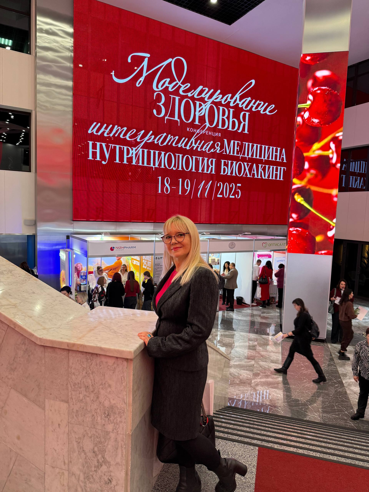
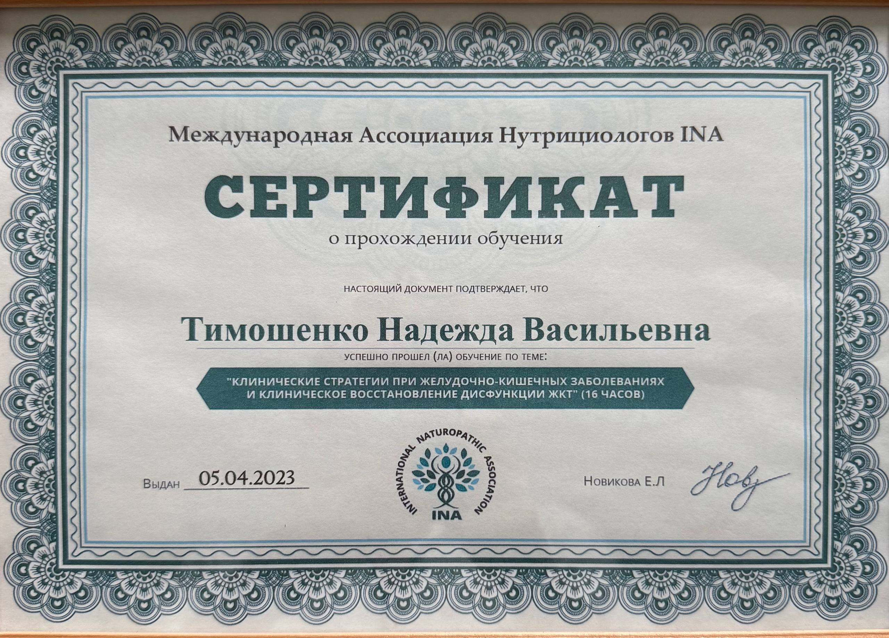

Контекст, а не шаблон
Учитываю цели, режим, пищевые привычки, ограничения, ресурсы и реальную жизнь — не предлагаю универсальных схем.
Питание · образ жизни · профилактика
Надежда Тимошенко
Индивидуальные онлайн-консультации по питанию и превентивному подходу к здоровью — без жёстких диет и общих рекомендаций.

Надежда Васильевна Тимошенко
Дипломированный специалист по превентивному управлению здоровьем
Автор курса «Снижение веса без диет»
01 — Подход
Самочувствие складывается из питания, сна, стресса, активности, привычек и показателей анализов. На консультации мы разбираем их во взаимосвязи и выбираем реалистичные шаги, которые можно поддерживать долго.
Учитываю цели, режим, пищевые привычки, ограничения, ресурсы и реальную жизнь — не предлагаю универсальных схем.
Помогаю увидеть связи между самочувствием, образом жизни и лабораторными показателями без перегруза цифрами.
После консультации остаётся структурный план: питание, режим, нутритивная поддержка и точки дальнейшего контроля.
02 — Запросы
Выберите близкий вам запрос — на встрече разберём его глубже и определим следующий шаг.
Вес растёт при привычном рационе, есть тяга к сладкому или хочется выстроить комфортное пищевое поведение.
Снижаются выносливость и концентрация, нарастает утомляемость, тревожность или ухудшается сон.
Нужно понять ключевые маркеры крови, витаминов, железа, гормонов и получить ориентиры для контроля.
Хотите мягко поддержать нервную систему и адаптировать режим под высокую нагрузку и восстановление.
Важно сохранять активность, ясность мышления, устойчивость к нагрузкам и хорошее самочувствие после 45 лет.
Есть результаты исследований, но не хватает системы: как связать данные, рацион, активность и повседневные решения.
03 — Форматы
Выберите формат — на отдельной странице подробно описаны этапы, запись и порядок оплаты.
Старт
12 800 ₽
Онлайн-консультация 60–70 минут с подготовкой.
Динамика
24 000 ₽
Две онлайн-встречи с повторным разбором и корректировкой стратегии.
Сопровождение
50 000 ₽
Последовательная работа с питанием, восстановлением и привычками.
04 — Как проходит работа
Вы оставляете заявку, выбираете удобный канал связи и получаете материалы для подготовки.
Встречаемся в видеосвязи, подробно разбираем запрос, привычки, самочувствие и исходные данные.
Получаете структурный файл с рекомендациями по питанию, образу жизни и дальнейшим шагам.
05 — Вопросы
Не всегда. На старте разбираем ваш запрос и исходные данные; при необходимости вы получите персональный список исследований для следующего шага.
Консультации проходят онлайн в формате видеосвязи. После записи администратор согласует удобное время и способ общения.
Вы получите рекомендации по питанию и образу жизни, разбор значимых взаимосвязей и план дальнейшего контроля. В течение трёх дней можно задать уточняющие вопросы.
Нет. Консультация носит информационный характер в рамках превентивного подхода и не заменяет медицинскую диагностику, лечение или назначения лечащего врача.
06 — Документы и практика
Кандидат географических наук. Специальность — геохимия и геофизика ландшафта. Дополнительное образование в нутрициологии и превентивном подходе к здоровью.
Сертификаты и дипломы подтверждают профессиональное образование, повышение квалификации и участие в тематических конференциях.


07 — Правовая информация
Важная информация о характере консультаций, порядке заключения договора и оплате услуг.
В соответствии с Постановлением Правительства РФ от 16.04.2012 N 291 «О лицензировании медицинской деятельности» (вместе с «Положением о лицензировании медицинской деятельности») услуги специалиста по оптимизации здоровья не входят в перечень медицинских услуг, следовательно, лицензированию не подлежат.
В соответствии с законодательством, он не обязан иметь медицинское образование, а также получать дополнительное профессиональное образование.
Медицинская деятельность, в отличие от деятельности специалистов по оптимизации здоровья, регулируется в соответствии с Федеральным законом от 21.11.2011 N 323-ФЗ «Об основах охраны здоровья граждан в Российской Федерации».
В соответствии с ч.10 ст.2 медицинская деятельность — профессиональная деятельность по оказанию медицинской помощи, проведению медицинских экспертиз, медицинских осмотров и медицинских освидетельствований, санитарно-противоэпидемических (профилактических) мероприятий и профессиональная деятельность, связанная с трансплантацией (пересадкой) органов и (или) тканей, обращением донорской крови и (или) её компонентов в медицине и прочие.
Условия оказания услуг, их содержание, стоимость, порядок оплаты, отмены и возврата денежных средств определяются публичной офертой, размещённой на сайте.
Публичная оферта регулируется статьями 435 и 437 Гражданского кодекса Российской Федерации. До оплаты выбранной услуги клиенту необходимо ознакомиться с условиями оферты.
В соответствии со статьёй 438 Гражданского кодекса Российской Федерации акцептом оферты является полное и безоговорочное принятие её условий. Если это предусмотрено условиями оферты, оплата выбранной услуги признаётся её акцептом. С момента акцепта договор считается заключённым.
При оказании услуг соблюдаются применимые положения Закона РФ от 07.02.1992 № 2300-1 «О защите прав потребителей», в том числе статьи 8 и 10, предусматривающие право потребителя на необходимую и достоверную информацию об исполнителе, услугах, их стоимости и условиях приобретения.
Первый шаг
Оставьте контакт — администратор уточнит удобное время и расскажет, как подготовиться к консультации.